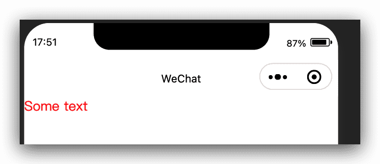

微信小程序自定义组件-简单入门
自定义组件入门
从小程序基础库版本 1.6.3 开始，小程序支持简洁的组件化编程。所有自定义组件相关特性都需要基础库版本 1.6.3 或更高。
开发者可以将页面内的功能模块抽象成自定义组件，以便在不同的页面中重复使用；也可以将复杂的页面拆分成多个低耦合的模块，有助于代码维护。自定义组件在使用时与基础组件非常相似。
创建自定义组件
类似于页面，一个自定义组件由 json wxml wxss js 4个文件组成。要编写一个自定义组件，首先需要在 json 文件中进行自定义组件声明（将 component 字段设为 true 可将这一组文件设为自定义组件）：
1 | { |
同时，还要在 wxml 文件中编写组件模板，在 wxss 文件中加入组件样式，它们的写法与页面的写法类似。具体细节和注意事项参见 组件模板和样式 。
代码示例：
1 | <!-- 这是自定义组件的内部WXML结构 --> |
1 | /* 这里的样式只应用于这个自定义组件 */ |
注意：在组件wxss中不应使用ID选择器、属性选择器和标签名选择器。
在自定义组件的 js 文件中，需要使用 Component() 来注册组件，并提供组件的属性定义、内部数据和自定义方法。
组件的属性值和内部数据将被用于组件 wxml 的渲染，其中，属性值是可由组件外部传入的。更多细节参见 Component构造器 。
代码示例：
1 | Component({ |
使用自定义组件
使用已注册的自定义组件前，首先要在页面的 json 文件中进行引用声明。此时需要提供每个自定义组件的标签名和对应的自定义组件文件路径：
1 | { |
这样，在页面的 wxml 中就可以像使用基础组件一样使用自定义组件。节点名即自定义组件的标签名，节点属性即传递给组件的属性值。
开发者工具 1.02.1810190 及以上版本支持在 app.json 中声明 usingComponents 字段，在此处声明的自定义组件视为全局自定义组件，在小程序内的页面或自定义组件中可以直接使用而无需再声明。
代码示例：
1 | <view> |
自定义组件的 wxml 节点结构在与数据结合之后，将被插入到引用位置内。
运行效果：
注意事项
一些需要注意的细节：
- 因为 WXML 节点标签名只能是小写字母、中划线和下划线的组合，所以自定义组件的标签名也只能包含这些字符。
- 自定义组件也是可以引用自定义组件的，引用方法类似于页面引用自定义组件的方式（使用
usingComponents字段）。 - 自定义组件和页面所在项目根目录名不能以“wx-”为前缀，否则会报错。
注意，是否在页面文件中使用 usingComponents 会使得页面的 this 对象的原型稍有差异，包括：
- 使用
usingComponents页面的原型与不使用时不一致，即Object.getPrototypeOf(this)结果不同。 - 使用
usingComponents时会多一些方法，如selectComponent。 - 出于性能考虑，使用
usingComponents时，setData内容不会被直接深复制，即this.setData({ field: obj })后this.data.field === obj。（深复制会在这个值被组件间传递时发生。）
如果页面比较复杂，新增或删除 usingComponents 定义段时建议重新测试一下。
微信小程序自定义组件-简单入门